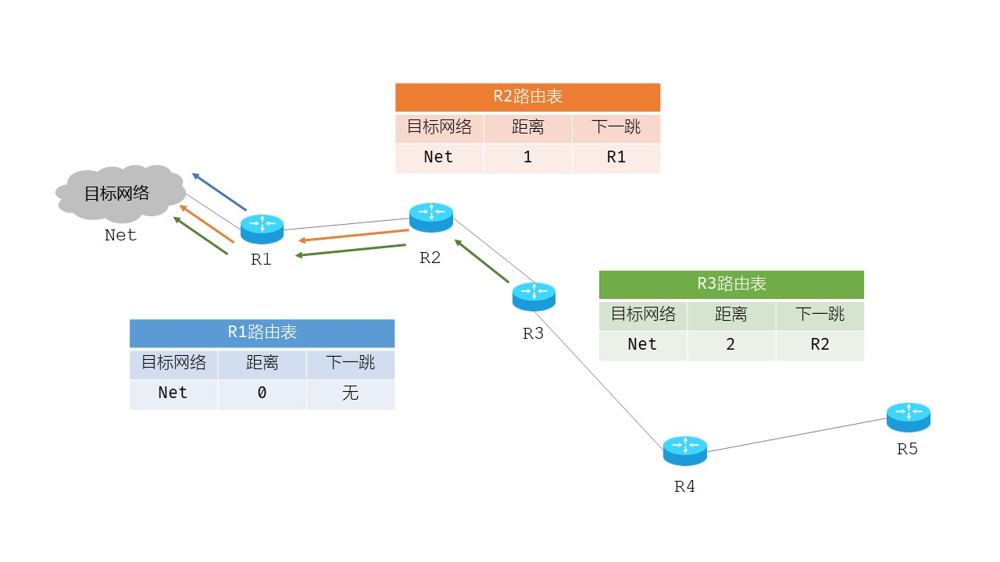
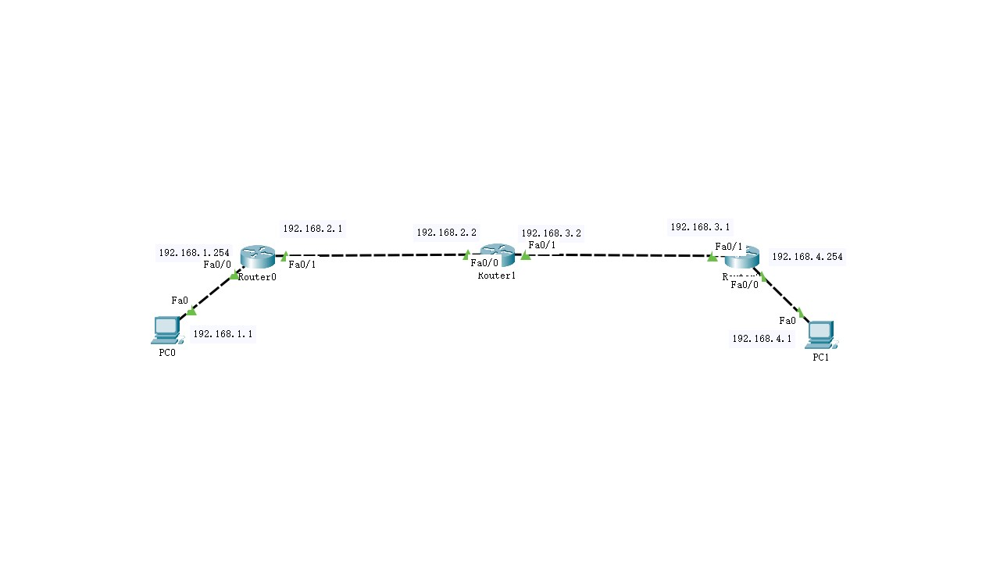
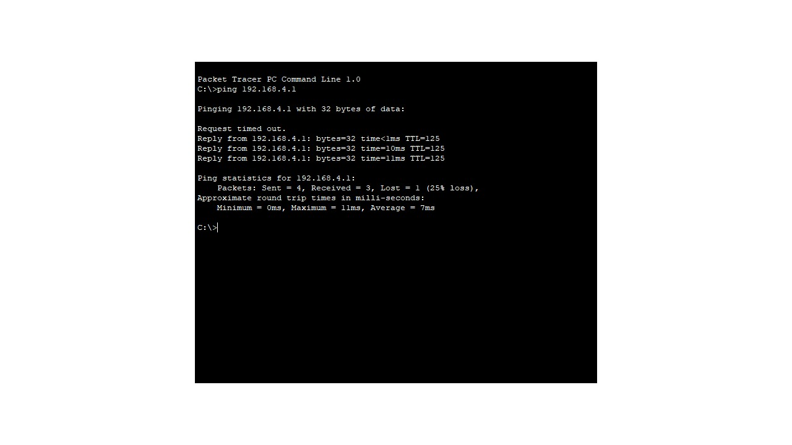

RIP 路由协议
- 一、基本原理
- . RIP-Routing Information Protocol，路由信息协议，属于内部网关路由协议；RFC 1058；当前版本为RIP2；
- . 基于距离矢量DV-distance vector的路由选择协议，使用跳数Hop count作为度量到目标网络的距离；
- . 每个路由器都要维护一组自己到其它网络的距离；适合小型网络；
- . 到直连网络的跳数是0，所以距离为0；到其它网络的跳数是经过的路由器个数；
- . 最大距离：15；16表示不可达；
- . 在直连路由的基础上，为网络生成动态路由；

- 图1 RIP的跳数
- 二、路由特点
- . 使用DUP协议，按照固定时间间隔，和相邻路由器交换[全部]路由信息广播RIP报文；
- . 更新定时器：每30s更新一次；通常会有一个[-5，+5]的随机偏移量；
- . 失效定时器：180s；每个条目被添加或被更新时，都会重新开始计时；超时，该条目被标记为无效路由，并不会被删除，只是不会被RIP广播；
- . 清除定时器：240s；超过180s会被标记为无效条目；再经过60s，就会被彻底删除；
- 三、路由更新规则
- 1. 如果收到的路由条目在当前路由表中不存在，则添加-发现新网络；
- 2. 如果路由表已有达到相同目标网络的路由条目，则：
- .若来自相同的下一跳路由器，则更新-最新的路由信息；
- .若来自不同的下一跳路由器，则比较距离：
- 情况1：新条目小于当前条目，则更新-新条目更具优势；
- 情况2：新条目等于当前条目，则添加新条目-负载均衡；
- 情况2：新条目大于当前条目，不做更新处理-新条目劣势；
- 四、RIP路由示例
- 已知当前路由器A的路由表为表1；收到的经RIP报文广播的路由器C的路由表为表2[在原有的距离上加+1]；更新后的路由器A的路由表为表3；
-
路由器A的路由表 目标网络 距离 下一跳 N1 7 A N2 2 C N6 8 F N8 4 E N9 4 F 表1 路由器C的路由表 目标网络 距离 下一跳 N2 4+1 C N3 8+1 C N6 4+1 C N8 3+1 C N9 5+1 C 表2 路由器A的路由表 目标网络 距离 下一跳 操作说明 N1 7 A N2 2->5 C 最新路由 N3 9 C 增加路由 N6 8->5 F->C 更新路由 N8 4 E N8 4 C 增加路由 N9 4 F 保留路由 表3 - 五、路由器配置RIP的基本命令
-
Router(config)#router rip 使用RIP路由协议；默认没有开启RIP路由； Router(config-router)#version 2 使用版本2，支持CIDR；版本1不支持； Router(config-router)#no auto-summary 取消路由聚合； Router(config-router)#network x.x.x.x 设置与相邻网络的动态路由； Router(config-router)#network y.y.y.y 设置与相邻网络的动态路由； - 实操部分
- 一、实验目的
- 1. 了解RIP协议的基本原理；
- 2. 掌握RIP协议的配置方法；
- 3. 进一步熟悉PT的使用；
- 二、实验要求
- 1. 根据网络拓扑完成RIP的配置；
- 2. 测试网络的连通性；
- 3. 网络拓扑布局合理、标注信息清晰完整；
- 4. 关键配置有源码或截图；
- 5. 测试结果有截图；
- 三、实验需求
- 1. 3台2811路由器；
- 2. 2台PC；
- 四、实验过程
- 1.搭建拓扑并配置各主机IP地址；确保各路由连接的是不同的网络；

- 图2 RIP拓扑
- 2. 路由器0的配置
- 2.1 配置路由器端口，生成直连路由；主要配置命令如下；
-
Router(config)#interface fa0/0 Router(config-if)#ip address 192.168.1.254 255.255.255.0 Router(config-if)#no shutdown Router(config)#interface fa0/1 Router(config-if)#ip address 192.168.2.1 255.255.255.0 Router(config-if)#no shutdown - 2.2 配置路由器RIP协议；主要配置命令如下；
-
Router(config)#router rip Router(config-router)#version 2 Router(config-router)#no auto-summary Router(config-router)#network 192.168.1.0 Router(config-router)#network 192.168.2.0 - 3. 路由器1、路由器2的配置同路由器0；
- 4. 查看各路由器的动态路由信息；

- 图3 使用PT的监视工具查看

- 图4 使用路由器的CLI命令：Router#show ip route查看路由

- 图5 使用路由器的CLI命令：Router#show ip protocols查看路由协议
- 5. 测试网络的连通性；

- 图6 ping对方主机
- 五、实验分析
- 1. 为什么第一次通信失败？
- 2. 再次ping对方，结果又如何？
- 3. 请发送简单PDU测试网络连通性；
- 4. 每个实验阶段的分析和异常处理。
- 作业
- 1. 根据实操部分的内容，完成RIP协议的配置和测试；
- 2. 以纸质的形式提交实验报告；
- 3. 论文格式请参照范文[点击下载]。